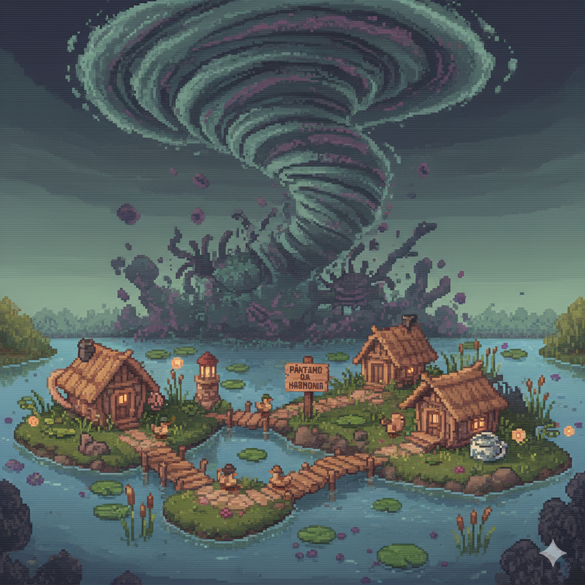

A vida era pacata para o Maurício, um pato com uma reputacao lendária que lhe rendeu o codinome: Capitao Quack Norris. A tranquilidade em seu lar, o Pantano da Harmonia, foi destruída pela chegada do "Quacknado", um turbilhao maligno. Essa tempestade nao apenas drenou as águas calmas, mas também trouxe consigo aberracoes marinhas que espalham poluicao tóxica na outrora intocada vila dos patos.
A missao do Capitao Quack Norris nao é apenas sobreviver, mas limpar seu ecossistema da invasao implacável. Munido apenas de seu estilingue de sementes e sua disciplina, ele precisa acumular Ouro (recompensa) para aprimorar suas habilidades e derrotar a fonte da poluicao: os caranguejos mutantes e o temível Polvo Tanque.